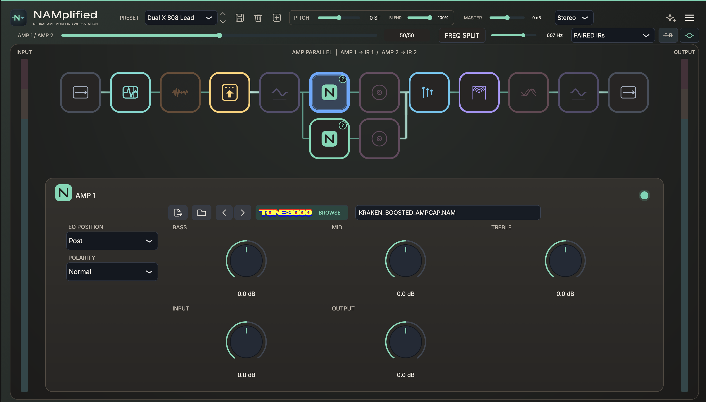
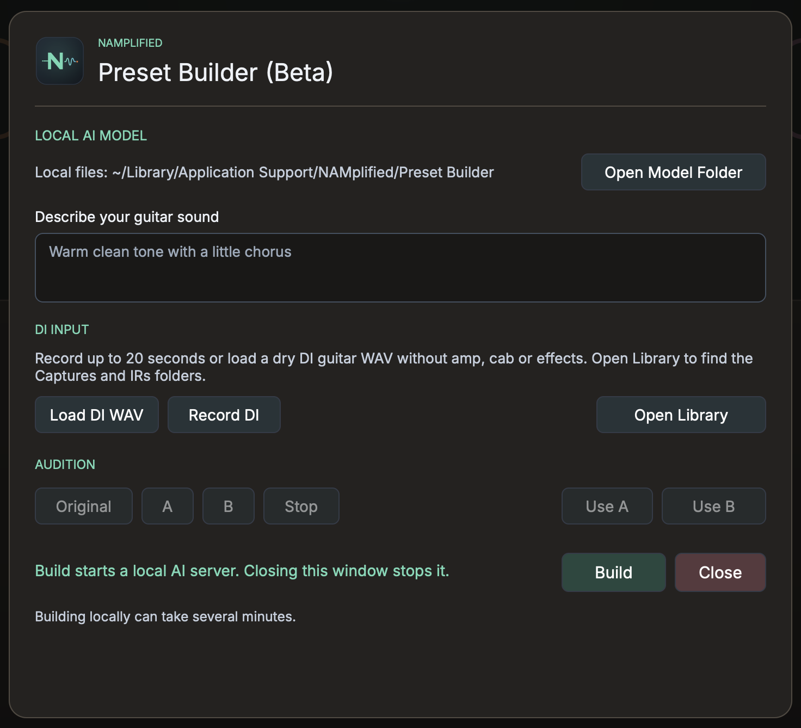
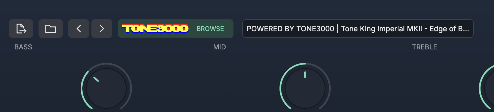

01 / BEFORE THE AMP
Give the amp something to work with.
Transpose up to 24 semitones up or down. Add a gate, FET compressor, pre-EQ, or a boost with your own pedal capture.
GUITAR SIGNAL CHAIN / MACOS
Build a macOS guitar rig with two NAM captures, cabinet IRs, and effects.
Explore the rig ↓ Explore Virtual Cab ↓
Choose a source for each cab block and adjust its low, mid, and high EQ bands independently.
Load a cabinet impulse response (IR) from a WAV file.

Choose a C414, SM57, or SM7B for the Oversized 4×12, then adjust its position across the speaker and its distance from the cone. This screenshot is from a local standalone development build.

01 / THE RIG
01 / BEFORE THE AMP
Transpose up to 24 semitones up or down. Add a gate, FET compressor, pre-EQ, or a boost with your own pedal capture.
02 / AMPS & CABS
Shape each NAM capture with pre- or post-model EQ. Invert amp polarity if the parallel blend sounds thin.
03 / AFTER THE AMP
Add ping-pong delay, Room, Plate, or Cloud reverb, and chorus. Finish with post-EQ.
02 / ROUTING
Freq Split. With both amps active in Parallel, set the crossover frequency to send low frequencies to Amp 1 and high frequencies to Amp 2.
Pair each amp with its own cabinet IR.

03 / PRESET BUILDER · BETA
“Warm clean tone with a little chorus.”
After the initial setup, Preset Builder runs locally on your Mac.

04 / CAPTURE LIBRARY
Load local NAM captures and cabinet IRs, or pick a capture from TONE3000.
Previous / Next. Open a NAM folder and use the arrows to step through its captures while you play.

TONE3000. Browse tones and select a capture directly in the amp editor.
NAMplified is an independent project and is not affiliated with or endorsed by TONE3000.
05 / RELEASE STATUS
In development for macOS. Public downloads are not available yet.